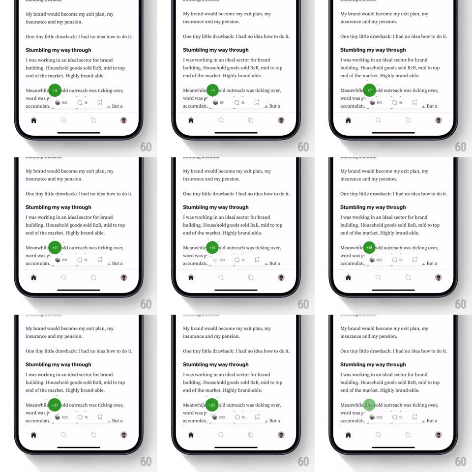

Media
Frame-by-frame

Rebuild this interaction 1:1: Medium's clap burst - holding the clap button pops a green circular badge above it whose count rockets upward (29 -> 46 -> 117 -> 176 -> 320 -> 424 -> 525) with a springy scale pop per increment while tiny green spark particles float off it.

Rebuild this interaction 1:1: Medium's clap burst - holding the clap button pops a green circular badge above it whose count rockets upward (29 -> 46 -> 117 -> 176 -> 320 -> 424 -> 525) with a springy scale pop per increment while tiny green spark particles float off it. ## Integration Integration: stack-agnostic spec - springs given as stiffness/damping, timed motions as duration + curve; map every value to your framework and animation library of choice. ## Scene Medium article view; bottom action bar with the clap (hands) icon and its count. During hold: a solid green circle with the running white total floats above the icon. ## Motion spec Pattern: hold-to-burst counter with particle sparks. - Touch-down on the clap icon: the green badge pops in above it (scale 0 -> 1.1 -> 1, spring ~450/18, ~250ms). - While held: the count increments at ~12/s; each increment pops the badge (scale 1 -> 1.08 -> 1, ~120ms) and swaps the number with a tiny upward roll. - Every few increments, 2-3 small green spark particles emit from the badge edge, float upward ~30px, and fade (400ms, randomized drift). - The clap icon itself bounces subtly under the badge (scale 0.95 -> 1, per increment) and the bar's other counts stay static. - Release: increments stop immediately, the badge holds ~600ms, then shrinks away (scale 1 -> 0, 200ms ease-in) while the final count settles onto the clap icon's inline counter (count-up tween, 300ms). ## Calibration - Increment rate is constant during hold - no acceleration curve. - Particles are decorative and capped (~20 alive max) so the bar never clutters. ## Reduced motion Badge fades in; count updates without pops or particles. ## Don't miss - The badge sits above the icon, overlapping the article text - it is a floating layer, not inline. - The final total persists on the clap icon after the badge disappears.